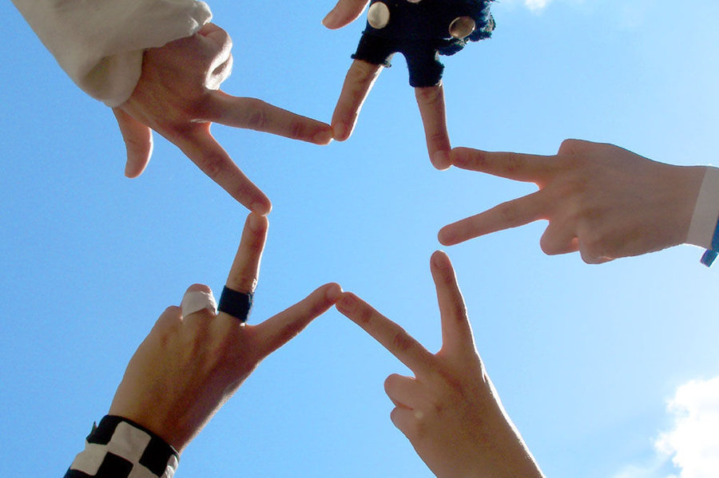
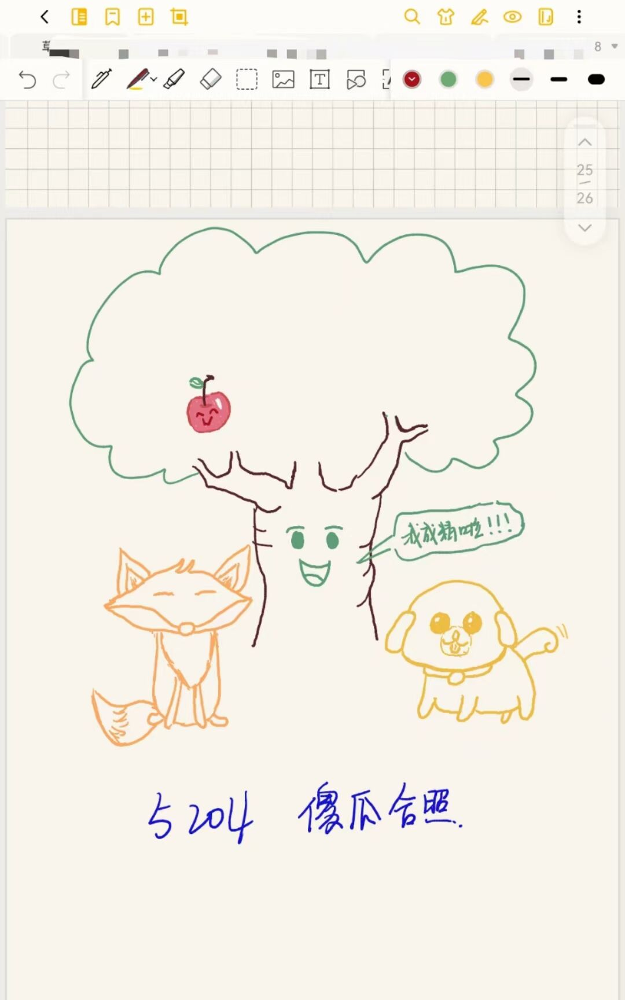
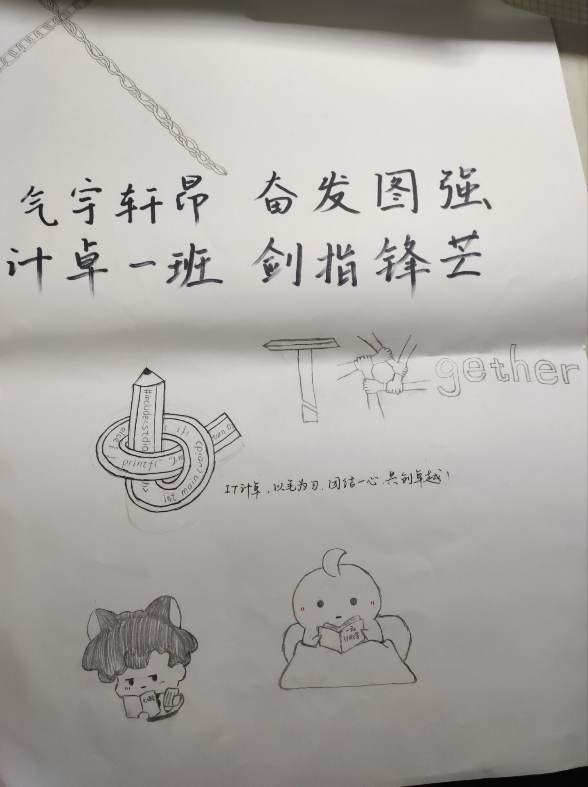

My Friends
my page books warmness
light love

我亲爱的高中寝室长的大作
（ps：灵感来源于某一次寝室集体晚自习请假，在操场上的幻想
那些彼此见不到的日子里，各自努力，又相互惦念。一通电话就足以让人安心，通体舒畅。毕竟像我这么念旧的人，他们是我永远的底气。

大学一次活动的寝室集体画像啦
（ps：找了好久要画什么水过去（bushi）
“真正关系好的朋友 一定是可以相互开玩笑的 骂骂咧咧 没有节操的疯闹 但其实下来不会戳对方的痛处表面上是笑骂互损直来直往 其实会在心中为她小心翼翼 温柔的绕道 。”